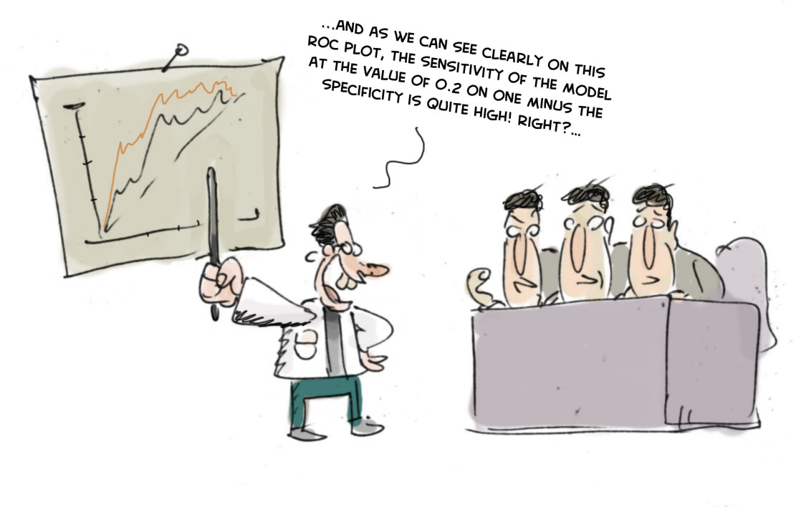
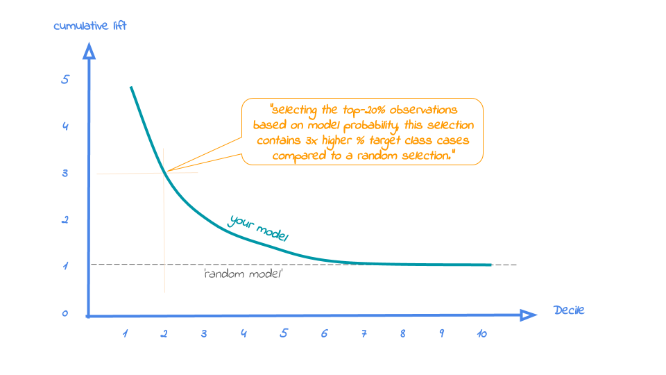

Why ROC curves are a bad idea to explain your model to business people
Summary
In this blog we explain four most valuable evaluation plots to assess the business value of a predictive model. These plots are the cumulative gains, cumulative lift, response and cumulative response. Since these visualisations are not included in most popular model building packages or modules in R and Python, we show how you can easily create these plots for your own predictive models with our modelplotr r package and our modelplotpy python module (Prefer python? Read all about modelplotpy here!). This will help you to explain your model's business value in laymans terms to non-techies.
Intro

‘...And as we can see clearly on this ROC plot, the sensitivity of the model at the value of 0.2 on one minus the specificity is quite high! Right?…’.
If your fellow business colleagues didn’t already wander away during your presentation about your fantastic predictive model, it will definitely push them over the edge when you start talking like this. Why? Because the ROC curve is not easy to quickly explain and also difficult to translate into answers on the business questions your spectators have. And these business questions were the reason you’ve built a model in the first place!
What business questions? We build models for all kinds of supervised classification problems. Such as predictive models to select the best records in a dataset, which can be customers, leads, items, events... For instance: You want to know which of your active customers have the highest probability to churn; you need to select those prospects that are most likely to respond to an offer; you have to identify transactions that have a high risk to be fraudulent. During your presentation, your audience is therefore mainly focused on answering questions like Does your model enable us to our target audience? How much better are we, using your model? What will the expected response on our campaign be?
During our model building efforts, we should already be focused on verifying how well the model performs. Often, we do so by training the model parameters on a selection or subset of records and test the performance on a holdout set or external validation set. We look at a set of performance measures like the ROC curve and the AUC value. These plots and statistics are very helpful to check during model building and optimization whether your model is under- or overfitting and what set of parameters performs best on test data. However, these statistics are not that valuable in assessing the business value the model you developed.
One reason that the ROC curve is not that useful in explaining the business value of your model, is because it’s quite hard to explain the interpretation of ‘area under the curve’, ‘specificity’ or ‘sensitivity’ to business people. Another important reason that these statistics and plots are useless in your business meetings is that they don’t help in determining how to apply your predictive model: What percentage of records should we select based on the model? Should we select only the best 10% of cases? Or should we stop at 30%? Or go on until we have selected 70%?... This is something you want to decide together with your business colleague to best match the business plans and campaign targets they have to meet. The four plots - the cumulative gains, cumulative lift, response and cumulative response - we are about to introduce are in our view the best ones for that cause.
Installing modelplotr
Before we start exploring the plots, let's install our modelplotr package. Since it is available on github, it can easily be installed using devtools:
library(devtools)
install_github("modelplot/modelplotr")
Now we're ready to use modelplotr. As you'll probably see when you run the installation code, it comes with a number of other very valuable package installs. In another post, we'll go into much more detail on our modelplot packages in r and python and all its functionalities. Here, we'll focus on using modelplotr with a business example.
Example: Predictive models from caret and mlr on the Bank Marketing Data Set
Let's get down to business! Our example is based on a publicly available dataset, called the Bank Marketing Data Set. It is one of the most popular datasets which is made available on the UCI Machine Learning Repository. The data set comes from a Portugese bank and deals with a frequently-posed marketing question: whether a customer did or did not acquire a term deposit, a financial product. There are 4 datasets available and the bank-additional-full.csv is the one we use. It contains the information of 41.188 customers and 21 columns of information.
To illustrate how to use modelplotr, let's say that we work for this bank and our marketing colleagues have asked us to help to select the customers that are most likely to respond to a term deposit offer. For that purpose, we will develop a predictive model and create the plots to discuss the results with our marketing colleagues. Since we want to show you how to build the plots, not how to build a perfect model, we'll use six of these columns in our example. Here’s a short description on the data we use:
- y: has the client subscribed a term deposit?
- duration: last contact duration, in seconds (numeric)
- campaign: number of contacts performed during this campaign and for this client
- pdays: number of days that passed by after the client was last contacted from a previous campaign
- previous: number of contacts performed before this campaign and for this client (numeric)
- euribor3m: euribor 3 month rate
Let's load the data and have a quick look at it:
# download bank data and prepare
#zipname = 'https://archive.ics.uci.edu/ml/machine-learning-databases/00222/bank-additional.zip'
# we encountered that the source at uci.edu is not always available, therefore we made a copy to our repos.
zipname = 'https://modelplot.github.io/img/bank-additional.zip'
csvname = 'bank-additional/bank-additional-full.csv'
temp <- tempfile()
download.file(zipname,temp, mode="wb")
bank <- read.table(unzip(temp,csvname),sep=";", stringsAsFactors=FALSE,header = T)
unlink(temp)
bank <- bank[,c('y','duration','campaign','pdays','previous','euribor3m')]
# rename target class value 'yes' for better interpretation
bank$y[bank$y=='yes'] <- 'term.deposit'
#explore data
str(bank)
## 'data.frame': 41188 obs. of 6 variables:
## $ y : chr "no" "no" "no" "no" ...
## $ duration : int 261 149 226 151 307 198 139 217 380 50 ...
## $ campaign : int 1 1 1 1 1 1 1 1 1 1 ...
## $ pdays : int 999 999 999 999 999 999 999 999 999 999 ...
## $ previous : int 0 0 0 0 0 0 0 0 0 0 ...
## $ euribor3m: num 4.86 4.86 4.86 4.86 4.86 ...
On this data, we've applied some predictive modeling techniques, created with the caret package and the mlr package. Both these popular R packages are wrappers for many predictive modeling techniques, such as logistic regression, random forest, XG boost, svm, neural nets and many, many others.
mlr and caret provide numerous different algorithms for binary classification. It should be noted, that to use our modelplotr package, you don't have to use caret or mlr to build your models. More on this in the modelplotr package documentation, just have a look at ?modelplotr::aggregate_over_deciles(). To have a few models to evaluate with our plots, we do take advantage of mlr's and caret's greatness.
# prepare data for training and train models
test_size = 0.3
train_index = sample(seq(1, nrow(bank)),size = (1 - test_size)*nrow(bank) ,replace = F)
train = bank[train_index,]
test = bank[-train_index,]
# estimate some models with caret...
library(caret)
# setting caret cross validation, here tuned for speed (not accuracy!)
fitControl <- trainControl(method = "cv",number = 2,classProbs=TRUE)
# mnl model using glmnet package
mnl = train(y ~.,data = train, method = "glmnet",trControl = fitControl)
## Error: package e1071 is required
# random forest using ranger package, here tuned for speed (not accuracy!)
rf = train(y ~.,data = train, method = "ranger",trControl = fitControl,
tuneGrid = expand.grid(.mtry = 2,.splitrule = "gini",.min.node.size=10))
# ... and estimate some models with mlr
library(mlr)
task = makeClassifTask(data = train, target = "y")
# discriminant model
lrn = makeLearner("classif.lda", predict.type = "prob")
lda = train(lrn, task)
## Error: Please use column names for `x`
#xgboost model
lrn = makeLearner("classif.xgboost", predict.type = "prob")
xgb = train(lrn, task)
## Error: Please use column names for `x`
Ok, we’ve generated some predictive models. Now, let’s prepare the data for plotting! We will focus on explaining to our marketing colleagues how good our predictive model works and how it can help them select customers for their term deposit campaign.
library(modelplotr)
# transform datasets and model objects into scored data and calculate deciles
prepare_scores_and_deciles(datasets=list("train","test"),
dataset_labels = list("train data","test data"),
models = list("rf","mnl","xgb","lda"),
model_labels = list("random forest","multinomial logit","XGBoost","Discriminant"),
target_column="y")
## ... scoring caret model "rf" on dataset "train".
## ... scoring mlr model "mnl" on dataset "train".
## Error in match.names(clabs, names(xi)): names do not match previous names
# transform data generated with prepare_scores_and_deciles into aggregated data for chosen plotting scope
plotting_scope(select_model_label = 'XGBoost',select_dataset_label = 'test data')
## Data preparation step 3 succeeded! Dataframe 'plot_input' created.
##
## No comparison specified, default values are used.
##
## Single evaluation line will be plotted: Target value "term deposit" plotted for dataset "test data" and model "XGBoost.
## "
## -> To compare models, specify: scope = "compare_models"
## -> To compare datasets, specify: scope = "compare_datasets"
## -> To compare target classes, specify: scope = "compare_targetclasses"
## -> To plot one line, do not specify scope or specify scope = "no_comparison".
What just happened? In the prepare_scores_and_deciles function, we've scored the customers in the train dataset and test dataset with their probability to acquire a term deposit, according to the predictive models we've just built with caret and mlr. Aside from the datasets and model objects, we had to specify the name of the target variable and for our convenience, we gave our datasets and models some useful labels.
In the second step, we specified the scope of the analysis. We've not specified the "scope" parameter, therefore the default - no comparison - is chosen. As the output notes, you can use modelplotr to evaluate your model(s) from several perspectives:
- Interpret just one model (the default)
- Compare the model performance across different datasets
- Compare the performance across different models
- Compare the performance across different target classes
Here, we will keep it simple and evaluate - from a business perspective - how well a selected model will perform in a selected dataset for one target class. We did specify values for some parameters, to focus on the XGBoost model on the test data. The default value for the target class is term deposit ; since we want to focus on customers that do take term deposits, this default is perfect.
Let’s introduce the Gains, Lift and (cumulative) Response plots.
Before we throw more code and output at you, let’s get you familiar with the plots we so strongly advocate to use to assess a predictive model’s business value. Although each plot sheds light on the business value of your model from a different angle, they all use the same data:
- Predicted probability for the target class
- Equally sized groups based on this predicted probability
- Actual number of observed target class observations in these groups
It’s common practice to split the data to score into 10 equally large groups and call these groups deciles. Observations that belong to the top-10% with highest model probability in a set, are in decile 1 of that set; the next group of 10% with high model probability are decile 2 and finally the 10% observations with the lowest model probability on the target class belong to decile 10.
Each of our four plots places the deciles on the x axis and another measure on the y axis. The deciles are plotted from left to right so the observations with the highest model probability are on the left side of the plot. This results in plots like this:

Now that it’s clear what is on the horizontal axis of each of the plots, we can go into more detail on the metrics for each plot on the vertical axis. For each plot, we’ll start with a brief explanation what insight you gain with the plot from a business perspective. After that, we apply it to our banking data and show some neat features of modelplotr to help you explain the value of your wonderful predictive models to others.
1. Cumulative gains plot
The cumulative gains plot - often named ‘gains plot’ - helps you answer the question:
When we apply the model and select the best X deciles, what % of the actual target class observations can we expect to target?
Hence, the cumulative gains plot visualises the percentage of the target class members you have selected if you would decide to select up until decile X. This is a very important business question, because in most cases, you want to use a predictive model to target a subset of observations - customers, prospects, cases,... - instead of targeting all cases. And since we won't build perfect models all the time, we will miss some potential. And that's perfectly all right, because if we are not willing to accept that, we should not use a model in the first place. Or build a perfect model, that scores all actual target class members with a 100% probability and all the cases that do not belong to the target class with a 0% probability. However, if you’re such a wizard, you don’t need these plots any way or you should have a careful look at your model - maybe you’re cheating?....
So, we'll have to accept we will lose some. What percentage of the actual target class members you do select with your model at a given decile, that’s what the cumulative gains plot tells you. The plot comes with two reference lines to tell you how good/bad your model is doing: The random model line and the wizard model line. The random model line tells you what proportion of the actual target class you would expect to select when no model is used at all. This vertical line runs from the origin (with 0% of cases, you can only have 0% of the actual target class members) to the upper right corner (with 100% of the cases, you have 100% of the target class members). It’s the rock bottom of how your model can perform; are you close to this, then your model is not much better than a coin flip. The wizard model is the upper bound of what your model can do. It starts in the origin and rises as steep as possible towards 100%. If less than 10% of all cases belong to the target category, this means that it goes steep up from the origin to the value of decile 1 and cumulative gains of 100% and remains there for all other deciles as it is a cumulative measure. Your model will always move between these two reference lines - closer to a wizard is always better - and looks like this:

Back to our business example. How many of the term deposit buyers can we select with the top-20% of our predictive models? Let's find out! To generate the cumulate gains plot, we can simply call the function plot_cumgains():
# plot the cumulative gains plot
plot_cumgains()

We don't need to specify any parameters, since the default input is plot_input, which is generated with the plotting_scope() function we ran previously. There are several parameters available to customize the plot, though. If we want to emphasize the model performance at a given point, we can add both highlighting to the plot and add some explanatory text below the plot. Both are optional, though:
# plot the cumulative gains plot and annotate the plot at decile = 2
plot_cumgains(highlight_decile = 2)
##
## Plot annotation:
## - When we select 20% with the highest probability according to XGBoost, this selection holds 82% of all term deposit cases in test data.
##
##

Our 'highlight_decile' parameter adds some guiding elements to the plot at decile 2 as well as a text box below the graph with the interpretation of the plot at decile 2 in words. This interpretation is also printed to the console. Our simple model - only 6 pedictors were used - seems to do a nice job selecting the customers interested in buying term deposites. When we select 20% with the highest probability according to XGBoost, this selection holds 82% of all term deposit cases in test data. With a perfect model, we would have selected 100%, since less than 20% of all customers in the test set buy term deposits. A random pick would only hold 20% of the customers with term deposits. How much better than random we do, brings us to plot number 2!
2. Cumulative lift plot
The cumulative lift plot, often referred to as lift plot or index plot, helps you answer the question:
When we apply the model and select the best X deciles, how many times better is that than using no model at all?
The lift plot helps you in explaining how much better selecting based on your model is compared to taking random selections instead. Especially when models are not yet used within a certain organisation or domain, this really helps business understand what selecting based on models can do for them.
The lift plot only has one reference line: the ‘random model’. With a random model we mean that each observation gets a random number and all cases are devided into deciles based on these random numbers. The % of actual target category observations in each decile would be equal to the overall % of actual target category observations in the total set. Since the lift is calculated as the ratio of these two numbers, we get a horizontal line at the value of 1. Your model should however be able to do better, resulting in a high ratio for decile 1. How high the lift can get, depends on the quality of your model, but also on the % of target class observations in the data: If 50% of your data belongs to the target class of interest, a perfect model would only do twice as good (lift: 2) as a random selection. With a smaller target class value, say 10%, the model can potentially be 10 times better (lift: 10) than a random selection. Therefore, no general guideline of a 'good' lift can be specified. Towards decile 10, since the plot is cumulative, with 100% of cases, we have the whole set again and therefore the cumulative lift will always end up at a value of 1. It looks like this:

To generate the cumulative lift plot for our XGBoost model predicting term deposit buying, we call the function plot_cumlift(). Let's add some highlighting to see how much better a selection based on our model containing deciles 1 and 2 would be, compared to a random selection of 20% of all customers:
# plot the cumulative lift plot and annotate the plot at decile = 2
plot_cumlift(highlight_decile = 2)
##
## Plot annotation:
## - When we select 20% with the highest probability according to model XGBoost in test data, this selection for term deposit cases is 4.1 times better than selecting without a model.
##
##

A term deposit campaign targeted at a selection of 20% of all customers based on our XGBoost model can be expected to have a 4 times higher response (411%) compared to a random sample of customers. Not bad, right? The cumulative lift really helps in getting a positive return on marketing investments. It should be noted, though, that since the cumulative lift plot is relative, it doesn't tell us how high the actual reponse will be on our campaign...
3. Response plot
One of the easiest to explain evaluation plots is the response plot. It simply plots the percentage of target class observations per decile. It can be used to answer the following business question:
When we apply the model and select decile X, what is the expected % of target class observations in that decile?
The plot has one reference line: The % of target class cases in the total set. It looks like this:

A good model starts with a high response value in the first decile(s) and suddenly drops quickly towards 0 for later deciles. This indicates good differentiation between target class members - getting high model scores - and all other cases. An interesting point in the plot is the location where your model’s line intersects the random model line. From that decile onwards, the % of target class cases is lower than a random selection of cases would hold.
To generate the response plot for our term deposit model, we can simply call the function plot_response(). Let's immediately highlight the plot to have the interpretation of the response plot at decile 1 added to the plot:
# plot the response plot and annotate the plot at decile = 1
plot_response(highlight_decile = 1)
##
## Plot annotation:
## - When we select decile 1 according to model XGBoost in dataset test data the % of term deposit cases in the selection is 61%.
##
##

As the plot shows and the text below the plot states: When we select decile 1 according to model XGBoost in dataset test data the % of term deposit cases in the selection is 61%.. This is quite good, especially when compared to the overall likelihood of 11%. The response in the second decile is much lower, about 28%. From decile 3 onwards, the expected response will be lower than the overall likelihood of 10.4%. However, most of the time, our model will be used to select the highest decile up until some decile. That makes it even more relevant to have a look at the cumulative version of the response plot. And guess what, that's our final plot!
4. Cumulative response plot
Finally, one of the most used plots: The cumulative response plot. It answers the question burning on each business reps lips:
When we apply the model and select up until decile X, what is the expected % of target class observations in the selection?
The reference line in this plot is the same as in the response plot: the % of target class cases in the total set.

Whereas the response plot crosses the reference line, in the cumulative response plot it never crosses it but ends up at the same point for decile 10: Selecting all cases up until decile 10 is the same as selecting all cases, hence the % of target class cases will be exactly the same. This plot is most often used to decide - together with business colleagues - up until what decile to select for a campaign.
Back to our banking business case. To generate the cumulative response plot, we call the function plot_cumresponse(). Let's highlight it at decile 3 to see what the overall expected response will be if we select prospects for a term deposit offer based on our XGBoost model:
# plot the cumulative response plot and annotate the plot at decile = 3
plot_cumresponse(highlight_decile = 3)
##
## Plot annotation:
## - When we select deciles 1 until 3 according to model XGBoost in dataset test data the % of term deposit cases in the selection is 33%.
##
##

When we select deciles 1 until 3 according to model XGBoost in dataset test data the % of term deposit cases in the selection is 33%. Since the test data is an independent set, not used to train the model, we can expect the response on the term deposit campaign to be 33%.
The cumulative response percentage at a given decile is a number your business colleagues can really work with: Is that response big enough to have a successfull campaign, given costs and other expectations? Will the absolute number of sold term deposits meet the targets? Or do we lose too much of all potential term deposit buyers by only selecting the top 30%? To answer that question, we can go back to the cumulative gains plot. And that's why there's no absolute winner among these plots and we advice to use them all. To make that happen, there's also a function to easily combine all four plots.
All four plots together
With the function call plot_all we get all four plots on one grid. We can easily save it to a file to include it in a presentation or share it with colleagues.
# plot all four evaluation plots and save to file
plot_all(save_fig = TRUE,save_fig_filename = 'Selection model Term Deposits')
## Plot is saved as: c:/TEMP/jupyter-blog/content/Selection model Term Deposits.png

Neat! With these plots, we are able to talk with business colleagues about the actual value of our predictive model, without having to bore them with technicalities any nitty gritty details. We've translated our model in business terms and visualised it to simplify interpretation and communication. Hopefully, this helps many of you in discussing how to optimally take advantage of your predictive model building efforts.
Get more out of modelplotr: using different scopes.
As we mentioned earlier, the modelplotr package also enables to make interesting comparisons, using the scope parameter. Comparisons between different models, between different datasets and (in case of a multiclass target) between different target classes. Curious? Please have a look at the package documentation or read our other posts on modelplotr.
However, to give one example, we could compare whether XGBoost was indeed the best choice to select the top-30% customers for a term deposit offer:
# set plotting scope to model comparison
plotting_scope(scope = "compare_models")
## Data preparation step 3 succeeded! Dataframe 'plot_input' created.
##
## Models "random forest", "multinomial logit", "XGBoost", "Discriminant" compared for dataset "test data" and target value "term deposit".
# plot the cumulative response plot and annotate the plot at decile = 3
plot_cumresponse(highlight_decile = 3)
##
## Plot annotation:
## - When we select deciles 1 until 3 according to model random forest in dataset test data the % of term deposit cases in the selection is 34%.
## - When we select deciles 1 until 3 according to model multinomial logit in dataset test data the % of term deposit cases in the selection is 32%.
## - When we select deciles 1 until 3 according to model XGBoost in dataset test data the % of term deposit cases in the selection is 33%.
## - When we select deciles 1 until 3 according to model Discriminant in dataset test data the % of term deposit cases in the selection is 33%.
##
##

Seems like the algorithm used will not make a big difference in this case. Hopefully you agree by now that using these plots really can make a difference in explaining the business value of your predictive models!
In case you experience issues when using modelplotr, please let us know via the issues section on Github. Any other feedback or suggestions, please let us know via jurriaan.nagelkerke@gmail.com or pb.marcus@hotmail.com. Happy modelplotting!